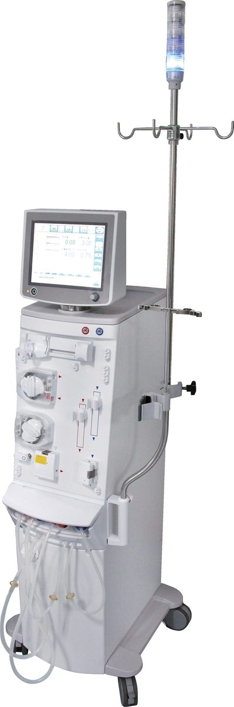

吳政哲腎臟內科主治醫師
臨床專長三高（高血壓、糖尿病、高血脂）、慢性腎臟病、急性腎衰竭、血液透析／腹膜透析、多囊腎、電解質異常、痛風、代謝症候群、戒菸治療
學歷與經歷
- 國立成功大學醫學系畢業
- 前成大醫院主治醫師
專科執照與認證
- 腎臟科專科醫師
- 內科專科醫師
- 糖尿病共照網醫師
- 戒菸治療醫師
學術參與
- 台灣慢性腎臟病臨床診療指引編撰委員
- 台灣腎臟醫學會會員
- 美國腎臟醫學會會員
長期的治療需要一個穩定的地方——固定的團隊、固定的時段、有問題找得到人。
郭綜合醫院血液透析中心由腎臟科專科醫師與專責透析護理人員組成固定團隊， 配合營養師與社工，提供血液透析與血液透析過濾治療。
臨床專長三高（高血壓、糖尿病、高血脂）、慢性腎臟病、急性腎衰竭、血液透析／腹膜透析、多囊腎、電解質異常、痛風、代謝症候群、戒菸治療

本中心使用的血液透析機為日本 NIPRO NCU-18，是給單一病患使用的機型。 機身寬 30 公分，配 10.4 吋可旋轉的彩色觸控螢幕，介面支援繁體中文。
以上出自原廠產品目錄（台灣總代理華江醫療儀器， 衛部醫器輸字第 025316 號）。實際上機時採用哪些設定， 由醫師依個別狀況決定。
透析不是把血洗乾淨就結束。真正決定長期生活品質的，是那些不會在 單次治療裡看出來的事：貧血、骨骼與礦物質代謝、營養狀況、血管通路的壽命、 以及心血管風險。下面是我們實際在做的事。
第一次透析是整段治療裡最不安的時刻，多數人是在還沒準備好的情況下 被告知要開始的。所以第一次不會一開始就洗滿四小時—— 時間會縮短、血流速度放慢，避免尿毒素清除太快引起透析不平衡症候群 （頭痛、頭暈、噁心）。接下來幾次再慢慢把時數拉長。
那天從報到、量體重、評估通路、上針到結束後的止血與休息， 每個環節都有人在旁邊看著；透析中有任何不舒服都可以當場說， 多數靠調整脫水速度或給藥就能緩解。廔管還沒成熟的人， 會先放暫時性的雙腔導管，等成熟再換過來。
第一次洗腎那天會發生什麼事 → 完整流程、可能的不適、回家之後要注意的事，都寫在這一篇。
這裡的內容是為了讓即將開始透析、或已經在透析的人， 以及他們的家人，知道會發生什麼事、可以問什麼問題。 所有醫療內容依據現行指引撰寫並定期檢視。